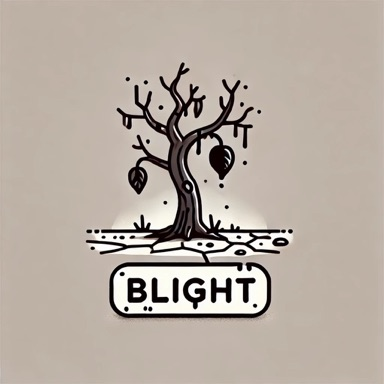
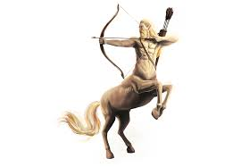
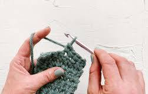
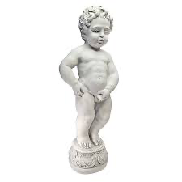

brash
[bræʃ]
abash: v.使害羞，使尴尬
base: a.卑鄙的
bask: v.晒太阳，取暖
blast: >n.一阵(大风)；冲击波；v.爆破；枯萎
blush: v.因某事物脸红；n.因羞愧等脸上泛出的红晕
boast: v./n.自夸
brace: v.使稳固，架稳；n.支撑物
brag: v.吹嘘
braid: n.穗子；发辫；v.编成辫子
brake: n.刹车；v.减速，阻止
brand: n.商标；烙印；v.在某事物上打烙印
brassy: a.厚脸皮的，无礼的
brat: n.孩子；顽童
brawl: v./n.争吵，打架
breach: n.裂缝，缺口；v.打破，裂开；违背
brisk: a.敏捷的，活泼的；清新健康的
broach: v.开瓶；提出(讨论)
clash: v.冲突，撞击
crass: a.愚钝的，粗糙的
erase: v.擦掉，抹去
gash: n.深长的伤口，裂缝
lash: n.鞭子；v.鞭打；捆住
mash: v.捣成糊状
quash: v.镇压；取消
sash: n.肩带
blase: adj. 厌倦享乐的，冷漠的
bray: v. 大声而刺耳地发出（叫唤或声音）
leash: n. (系狗的)绳子
rasp: v. 发出刺耳的声音
stash: v. 藏匿，隐藏
thrash: v. 鞭打
wrath: n. 愤怒，大怒
rash(ræʃ): a. 轻率的, 匆忙的, 鲁莽的\nn. 皮疹
brood
[bru:d]
brook: n.小河
boom: n.繁荣昌盛时期；v.发出深沉有回响的声音
boon: n.恩惠，天赐福利
boor: n.举止粗野的人；乡下人
braid: n.穗子；发辫；v.编成辫子
brand: n.商标；烙印；v.在某事物上打烙印
breed: v.繁殖；教养；n.品种，种类
crook: v.使弯曲；n.钩状物
droop: v.低垂；沮丧，萎靡
frond: n.羊齿、棕榈等的叶子
groom: n.马夫；新郎
prod: v.刺，捅；激励
boo: v. 作嘘声，嘘（某人）用嘘声表示不满、蔑视或反对
broil: v. 烧烤
brooch: n. 胸针
croon: v. 低声歌唱
broo(bru:): [苏][北英]任何可饮用的清饮料(清汤, 果汁等)
rood(ru:d): n. 十字架, 十字架上的基督像
candid
['kændid]
candor: n.坦白，率直
rancid: a.不新鲜的，变味的
canard: n. 谣言，假新闻
andi(): 安迪（名字）
cand(): [化] 萤石
candi(): n. (Candi)人名；(意)坎迪
clique
[kli:k]
oblique: a.间接的；斜的
pique: n./v.(因自尊心受伤害而导致的)不悦，愤怒；v.冒犯
plaque: n.匾；血小板
unique: a.独一无二的，独特的；无与伦比的
cliche: adj. 陈腐的
cloying
['klɔiiŋ]
cling: v.紧抓住；舍不得放弃
glowing: a.热情赞扬的
cloy([klɔi]): v. (吃甜食)生腻，吃腻
cloy(klɒi): vt. 使吃饱, 使过饱, 使厌腻\nvi. 倒胃口
coerce
[kəu'ə:s]
coarse: a.粗糙的；低劣的；粗俗的
core: n.果心；核心)；v.去掉某物的中心部份
coterie: n.(有共同兴趣的)小团体
pierce: v.刺透；穿过
conjoin
[kən'dʒɔin]
contain: v.包含，含有；控制；阻止，遏制
enjoin: v.命令，吩咐
conj(): (缩)连接词
join(dʒɒin): vi. 参加, 结合, 加入\nvt. 连接, 结合, 参加, 加入\nn. 连接, 结合, 接合点\n[计] 连接; 汇合指令
disparate
['dispərit]
disparage: v.贬抑，轻蔑
desperate: a.不顾死活的，拼命的
disparity: n.不同，差异
dispar(): [医] 不等的, 不相称的
para('pɑ:rә): [经] 帕拉
rate(reit): n. 比率, 率, 速度, 价格, 费用, 等级\nvt. 估价, 认为, 鉴定等级, 责骂\nvi. 被评价, 责骂
spar(spɑ:): n. 晶石, 圆材, 拳斗, 争论\nvt. 装圆材于\nvi. 拳斗, 争论
ecstatic
[eks'tætik]
static: a.静态的，呆板的
static(['stætik]): a.静态的，呆板的
stat(stæt): [电] 静
static('stætik): n. 静电, 静电干扰\na. 静态的, 静止的, 固有的, 静电的
tati(): n. (Tati)人名；(法、刚(布)、意、印尼)塔蒂
erudite
['eru:dait]
crudity: n.粗糙，生硬
dite(dait): n. <方>一点儿
Rudi(): 鲁迪（男子名）
rudite(): 砾屑岩; 砾状岩
expansive
[iks'pænsiv]
explosive: n.炸药；a.爆炸性的；使人冲动的
pan([pæn]): v.严厉批评
pans(): n. 平底锅（pan的复数）
factitious
[fæk'tiʃəs]
fictitious: a.假的；虚构的
facetious: a.轻浮的，好开玩笑的
fastidious: a.难取悦的，挑剔的
fact(fækt): n. 事实, 真实性, 真相, 细节, 论据
IOUs(): suff. 有…性质的；属于…的；如…的
titi(ti'ti:): 狨(绢毛猴)(产于巴西和玻利维亚)
fidget
['fidʒit]
midget: n. 侏儒
budget: n.预算
gadget: n.小工具，小机械
ridge: n.脊(如屋脊，山脊等)；隆起物
fillet: n. 束发带；鱼肉片
fidge(fidʒ): n. 坐立不安, 寝食难安者\nv. 抽筋
formative
['fɔ:mətiv]
formation: n.组织，形成；(军队)编队
hortative: a.激励的
form(fɒ:m): n. 形状, 形体, 类型, 方式, 表格, 形式\nv. 形成, 排列, (使)组成\nn. 表单\n[计] 表单
forma(): n. 福马（环境科技公司名）
format('fɒ:mæt): n. 开本, 版式, 形式, 格式\nvt. 格式化\n[计] 格式; DOS外部命令:对磁盘进行格式化
fret
[fret]
abet: v.教唆，鼓励，帮助
brat: n.孩子；顽童
crest: n.山顶，浪尖；羽冠
duet: n.二重唱
erect: a.竪立的，笔直的，直立的
facet: n.(宝石等的)小平面；侧面
fast: n.绝食，斋戒；adv.很快地，紧紧地
feat: n.功绩，壮举
ferret: n.雪貂；v.用雪貂猎取；搜寻
fiat: n.命令
flit: v.掠过，迅速飞过
grit: n.沙粒；决心，勇气；v.下定决心，咬紧牙关
ire: n.愤怒；v.激怒
meet: a.合适的
ore: n.矿，矿石
prey: n.被捕食的动物
rent: n.裂缝；(意见)分歧
whet: v.磨快；刺激
writ: n.命令状，书面命令
beet: n. 甜菜

fleet: adj. 快速的；v. 消磨，疾驰；飞逝，掠过
fort: n. 要塞，城堡
fray: n. 吵架，打斗；v. 磨破
freak: n. 怪物，奇事；adj. 反常的
trek: v. 艰苦跋涉
gabble
['gæbl]
babble: v.胡言乱语；牙牙学语；喋喋不休
dabble: v.涉足，浅赏
gamble: v./n.赌博；孤注一掷
garble: v.曲解，窜改
gobble: v.贪婪地吃，吞没
rabble: n.乌合之众；下等人
amble: n./v.漫步，缓行
gaggle: n.鹅群
garbled: a.引起误解的；窜改的
labile: a.不稳定的
marble: n.大理石
nibble: v.一点点地咬，慢慢啃

ramble: n./v.漫步
table: v.搁置，不加考虑
wobble: v.动摇；犹豫
bauble: n. 花哨的小玩意儿；没价值的东西
bubble: v. 起泡；n. 气泡，水泡
dabbler: n. 涉猎者，浅尝辙止者
gale: n. 狂风
hobble: v. 蹒跚；跛行
rubble: n. (一堆)碎石，瓦砾
warble: v. (尤指鸟)叫出柔和的颤音
gab([gæb]): n. 饶舌，爱说话；v. 空谈，瞎扯；闲逛，游荡
haughty
['hɔ:ti]
aught(ɒ:t): n. 任何事物, 零
haug(): [人名] 豪格
haugh(hɔ:, hɑ:f): n. <苏>[地]河岸平台,泛滥平原
haught(): [人名] 霍特
indignant
[in'dignənt]
indigent: a.贫穷的，贫困的
dignan(): n. (Dignan)人名；(英)迪格南
indign(in'dain): a. <古> 不值得的,不应得的,不光彩的
nant(nænt): n. 小河谷
intumescence
[`intju(:)'mesns]
ence(): 具...的行为,状态
intumesce(.intju:'mes): vi. 膨胀, 肿大\n[医] 肿大, 膨大, 隆起
mesc(mesk): n. <美俚>= mescaline
tumesce(tjj'mes): v. (使)(性器官)肿胀
tumescence(tju'mesns, tu:-): n. 肿胀, 肿大, 肿大部分\n[医] 肿胀, 肿大
invigorate
[in'vigəreit]
invigilate: v. 监考
gora('^әurә): (=gorah)哥拉弓琴
orate('ɒ:reit): vi. 演说, 演讲, 高谈阔论
rate(reit): n. 比率, 率, 速度, 价格, 费用, 等级\nvt. 估价, 认为, 鉴定等级, 责骂\nvi. 被评价, 责骂
vigo('vi:^әj, 'bi:^ɔ:): n. 比戈（西班牙西北部港市）
vigor('vigә): n. 精力, 活力
lachrymose
['lækriməus]
lach('lək): [医][=lachrymator]催泪毒气, 催泪剂
mose(məuz): n. 摩斯（男子名）
litigant
['litigənt]
gant(): n. 甘特图
tigan(): [医]盐酸三甲氧苯酰胺制剂的商品名
lofty
['lɔ(:)fti]
loft: n. 阁楼，顶楼

aloft: adv.在空中，在头顶上
laity: n.俗信徒，俗人阶级；外行
loath: a.不情愿的，勉强的
lobby: n.大厅，休息厅
lot: n.签；命运；v.抽签，划分
lout: n. 粗人
lusty: adj. 精力充沛的
loft([lɔft]): n. 阁楼，顶楼
loft(lɒft): n. 阁楼, 鸽房, 楼上\nvt. 储存于阁楼上\nvi. 将球高击
miscellany
[mi'seləni]
cell(sel): n. 单元, 细胞, 电池\n[计] 单元
cella('selә): n. 内殿\n[医] 小房, 小室, 细胞
ella('elә): n. 艾拉（女子名）
misc(): [计] 杂类新闻组\n[经] 多种外汇报价
misce(): [医] 混合, 混和
miscella(mi'selә): 油水混合物(用浸出法制油时的中间产物)
opprobrious
[ə'prəubriəs]
brio('bri:әu): n. 元气充沛, 生动
IOUs(): suff. 有…性质的；属于…的；如…的
riou(): [人名] 里乌
perpetuate
[pə(:)'petjueit]
perpetual: a.连续不断的；永久的
perp(pɚrp): n. <口>罪犯
perpetua(): [人名] 佩尔佩图阿

platonic
[plə'tɔnik]
laconic: a.简洁的
tonic(['tɔnik]): n.增进健康之物，补品；a.滋补的
aton('ɑ:tɔn): n. 阿托恩（古埃及信奉的太阳神）
atonic(æ'tɒnik): a. 无重音的, 清音的, 张力缺乏的\n[医] 张力缺乏的, 弛缓的
plat(plæt): n. 小块地, 地图\nvt. 制...的地图
Plato('pleitәu): n. 柏拉图
toni('tәuni): n. 托妮（女子名）
tonic('tɒnik): n. 补药, (音乐)主调音或基音\na. 滋补的, 声调的, 使精神振作的
plutocracy
[plu:'tɔkrəsi]
autocracy: n.独裁政府
racy(['reisi]): a.活泼的，生动的
cracy(): suff. 统治；政体
Pluto('plu:tәu): n. 冥王星, 普路托(冥王)
racy('reisi): a. 保持原味的, 活泼的, 生动的, 为竞赛设计的
raze
[reiz]
faze: v.使…狼狈，折磨
gaze: v./n.凝视，注视
graze: v.(动物)吃(地上长的)草；放牧
maze: n.迷宫
rage: n.盛怒；v.激怒
rave: n.热切赞扬；v.狂语
daze: v. 使茫然，使眩晕
awe: n./v.敬畏
bale: n.大包裹；灾祸，不幸
bane: n.祸根
bare: v.暴露；a.赤裸的
base: a.卑鄙的
brace: v.使稳固，架稳；n.支撑物
brake: n.刹车；v.减速，阻止
brazen: a.厚脸皮的
cane: n.枴杖
cape: n.披肩，短斗篷；海角
crate: n.篓，板条箱
erase: v.擦掉，抹去
fade: v.褪色，消失，凋谢
gape: v.裂开；目瞪口呆地凝视
glaze: v.装玻璃于；上釉彩；n.釉
grace: n.优美
grate: v.发出“吱嘎”声；磨碎；使人烦躁

grave: a.严峻的；n.墓穴
hale: a.健壮的，矍铄的
irate: a.发怒的
jade: n.疲惫的老马；玉，翡翠
jazz: n.爵士乐；喧闹
lace: n.鞋带，系带；网眼花边，透孔织品
lave: v.洗浴；慢慢冲刷
maize: n.玉米
mare: n.母马，母驴
mate: n.伙伴；配偶；v.交配
pare: v.削；修剪；削减，缩减
prate: v.瞎扯，胡说
racy: a.活泼的，生动的
rag: n.旧布，碎布；破旧衣服
raid: n.突然袭击
rail: n.栏杆；铁轨；v.咒骂，猛烈指责
ram: n.公羊；撞锤，猛击；填塞
rant: v.咆哮；口出狂言
rapt: a.专心致志的，全神贯注的
ravel: v.纠缠，纠结；拆开，拆散
使纠缠，变得错综复杂；
razor: n.剃刀，刮胡刀
rife: a.流行的，普遍的
rile: v.使…恼火，激怒
rite: n.(宗教的)仪式
rive: v.撕开，分裂
robe: n.长袍，礼服
roe: n.鱼卵

rue: n.后悔，遗憾
ruse: n.骗术，诡计，谋略
sage: a.智慧的；n.智者
sane: a.神志清楚的，明智的
sate: v.使心满意足，使厌腻
tame: a.驯服的；沉闷的
tare: n.莠草，杂草
wage: v.开始，进行(战争，运动)
wane: v.减少，衰微
doze: v. 瞌睡，假寐
fake: v. 伪造；佯装
gale: n. 狂风
jape: v. 开玩笑或讽刺
ooze: v. 慢慢地流，渗出；(勇气)逐渐消失
pane: n. 窗格玻璃
rasp: v. 发出刺耳的声音
rote: n. 死记硬背
rove: v. 流浪，漂泊
safe: n. 保险柜；冷藏室，饭橱
wade: v. 涉水；跋涉
regent
['ri:dʒənt]
reagent: n.试剂(导致化学反应)
relent: v.动怜悯心；减弱
resent: v.憎恶，愤恨
repent: v. 懊悔，后悔
cement: n.水泥；胶粘剂；v.粘合，巩固
cogent: a.有说服力的
decent: a.适当的，可接受的；得体的
legend: n.地图里的说明文字或图例
recant: v.改变，放弃(以前的信仰)
rent: n.裂缝；(意见)分歧
revert: v.恢复，回复到；重新考虑
segment: n.部份
urgent: a.迫切的，紧急的
beget: v. 产生，引起
regiment: n. (军队)团；v. 严格控制
gent(dʒent): n. 绅士
rege(): n. (Rege)人名；(匈)赖格；(意)雷杰
salve
[sɑ:v]
valve: n.活门，阀门
bale: n.大包裹；灾祸，不幸
carve: v.雕刻
delve: v.深入探究，钻研
hale: a.健壮的，矍铄的
lave: v.洗浴；慢慢冲刷
mauve: a.淡紫色的
naive: a.天真的，纯朴的
rave: n.热切赞扬；v.狂语
sage: a.智慧的；n.智者
saliva: n.唾液，口水
salute: v.行举手礼；向…致意；n.敬礼
salvage: n./v.(从灾难中)抢救，海上救助
sane: a.神志清楚的，明智的
sate: v.使心满意足，使厌腻
savvy: a.有见识和精明能干的
scale: n.鱼鳞；(音乐)音阶
shale: n.页岩(一种由似泥土细粒的沉淀物层组成的易分裂的岩石)

shelve: v.搁置
shove: v.推挤，猛推
stale: a.不新鲜的，陈腐的
gale: n. 狂风
helve: n. 斧柄

safe: n. 保险柜；冷藏室，饭橱
slue: v. (使)旋转
waive: v. 放弃；推迟考虑
scuff
[skʌf]
scoff: v.嘲笑；狼吞虎咽；n.嘲笑，笑柄
cuff: n. 袖口；v. 上手铐
scarf: n.围巾，披肩
skiff: n.轻舟，小船
stiff: a.僵直的，呆板的，严厉的
stuffy: a.(空气)不新鲜的，闷气的
bluff: n. 虚张声势; 悬崖峭壁
gruff: adj. (指人、声音)粗野的
scud: v. 疾行，疾驶
cuff(['kʌf]): n. 袖口；v. 上手铐
cuff(kʌf): n. 袖口, 一巴掌\nvt. 用巴掌打\nvi. 殴斗
somnolent
['sɔmnələnt]
lent(lent): lend的过去式和过去分词
nole('nəʊl): [医]注, 注释, 音符
nolen(): [人名] 诺伦
olen(): [地名] [比利时] 奥伦
olent('әjlәnt): a. <古>有香味的,有气味的
spruce
[spru:s]
prude: n.过分守礼的人
prune: n.梅干；v.修剪
splice: v.接合，衔接
truce: n.停战，休战(协定)
pruce(): [人名] 普鲁斯
trowel
['trauəl]
grovel: v.摇尾乞怜，奴颜婢膝
propel: v.推进
prowl: v.潜行于，偷偷地漫游
growl: v. (动物)咆哮，吼叫
trawl: n. 拖网；v. 用拖网捕鱼；搜罗
rowe(rәu): n. 罗（姓氏）
rowel('rauәl): n. (马刺上的)小齿轮, 排脓条\nvt. 用马刺轮踢, 将排脓条插入
trow(trәu): v. 相信, 想
abound
[ə'baund]
absurd: a.荒谬的，可笑的
astound: v.使震惊
abou(): n. (Abou)人名；(阿拉伯)阿布；(西)阿沃
boun(bu:n): [古]准备
bound(baund): n. 跃, 回跳, 范围, 边界\na. 受约束的, 装有封面的, 有义务的, 关联的, 被束缚的, 准备去...的, 便秘的\nvi. 跳跃, 弹起\nvt. 使跳, 限制, 形成...的疆界\nbind过去式和过去分词\n[计] 装订的
abstinent
['æbstinənt]
stin(): n. 永续台湾资讯网
stine(): （人名）.斯泰恩
tine(tain): n. 齿, 尖头
adulate
['ædjuleit]
dilate: v.(身体某部位)张大，扩大
emulate: v.努力赶上或超越
modulate: v.调整(音的强弱)
maculate: adj. 有斑点的
undulate: v. 波动，起伏
dula(): [计] 双的
late(leit): a. 迟的, 晚的, 已故的\nadv. 很晚, 很迟, 晚
advent
['ædvənt]
advert: v. 注意，留意
adept: a.老练的，精通的
ardent: a.热心的，热烈的
assent: v.同意，赞成
avert: v.避免，防止
dent: n.缺口，凹痕；v.弄凹
vent: v.发泄(情绪)；开孔；n.孔，口
vent([vent]): v.发泄(情绪)；开孔；n.孔，口
vent(vent): n. 排气口, 出口, 通风孔, 发泄\nvt. 发泄, 排出, 给...开孔
alacrity
[ə'lækriti]
clarity: n.清楚
crit(krit): n. （核反应堆）保持一种自身支持的链式反应；暴击；评判
alms
[ɑ:mz]
acme: n.顶点，极点
alias: n.化名，别名
axis: n.轴(常为虚构之线，如地球轴)
balm: n.香油，药膏；镇痛剂
balmy: a.(气候)温和的；芳香的
elm: n.榆树

palmy: a.繁荣的；棕榈的
qualms: n.疑虑(尤指有关良心问题的)
ambidextrous
['æmbi'dekstrəs]
bid([bid]): v.命令；出价，投标
ambi(): pref. 表示两边
bide(baid): vt. 等候, 住, 忍耐, 等待
dextro('dekstrәu): n. 右旋性的
dextrous('dekstrәs): a. 机巧的, 巧妙的
rous(rajs): n. 劳斯（姓氏）
trou(trau): (=trousers)[美俚]裤子
ancillary
[æn'siləri]
ancilla(æn'silә): n. 附属物, 女仆人
cill(sɪl): [法]窗台; 岩床; 基石; 门槛
Cilla(): n. (Cilla)人名；(意)奇拉；(西)西利亚
lary(): n. 天琴座；拉里（男子名）
antiquated
['æntikweitid]
anti('ænti): n. 反对者, 反对论者\na. 反对的
Antiqua(): n. 安迪瓜（瓜地马拉首都）
antiquate('æntikweit): vt. 使古旧, 废弃
ated(et; eit): v. 吃（eat的过去式）
quat('kwɔt): 皮疹
apiary
['eipjəri]
aviary: n.大鸟笼，鸟舍
lapidary: n. 宝石工，宝石专家
Apia(ɑ:'pi:ɑ:): 阿皮亚[南太平洋岛国西萨摩亚首都]
appellation
[`æpe'leiʃən]
appel(ɑ:'pel): n. 垫步
appella(): [医] 阿配拉(苹果精粉)
ation(eɪʃən): 增强辐射, 文明阶段
ella('elә): n. 艾拉（女子名）
lati('læti. 'lɑ:ti): n. （lat的复数）1940年前拉脱维亚（Latvia）的货币单位；（紫檀状）双雄苏木
lation(): n. 副调制
pell(pel): n. 一卷羊皮纸
pella(): 斗篷
tion(): n. 象征式互动；支票电托收
approbation
[`æprə'beiʃən]
appro('æprәu): n. (商俚)看货后再作决定
ation(eɪʃən): 增强辐射, 文明阶段
bati(): n. (Bati)人名；(阿拉伯)巴提；(法、罗)巴蒂
probation(prәu'beiʃәn): n. 鉴定, 查验, 证明, 试用, 察看, 缓刑\n[医] 审辨, 试验, 鉴定, 试用, 见习
tion(): n. 象征式互动；支票电托收
arachnid
[ə'ræknid]
arac(): 航空航天研究应用中心（Aerospace Research Application Center）\n阵列简化分析电路（Array Reduction Analysis Circuit）
ardent
['ɑ:dənt]
adept: a.老练的，精通的
advent: n.到来，来临
arena: n.(角斗的)竞技场
arrest: v.依法逮捕；阻止，抑制
assent: v.同意，赞成
dent: n.缺口，凹痕；v.弄凹
garment: n.衣服
harden: v.变硬，变坚强
indent: v.切割成锯齿状
orient: a.上昇的；v.确定方向；使熟悉情况
prudent: a.审慎的，三思而后行的，精明的
rent: n.裂缝；(意见)分歧
urgent: a.迫切的，紧急的
trident: n. 三叉戟；三叉鱼叉
warden: n. 看守人，管理员
den([den]): n.兽穴，窝
dent([dent]): n.缺口，凹痕；v.弄凹
arden('ɑ:dәn): n. 昔时阿尔丁的森林地带；浪漫的地方
dent(dent): n. 凹痕\nvt. 使凹下, 削弱\nvi. 塌陷
atheism
['eiθiizəm]
heis(): [医][=high-energy ion scattering]高能离子散射
theis(): [人名] 泰斯
theism('θi:izm): n. 有神论, 一神论, 茶中毒\n[医] 茶中毒
atrophy
['ætrəfi]
trophy: n.奖品，战利品
trophy(['trəufi]): n.奖品，战利品
rophy(): [网络] 罗菲
trop(tro): adv. 太, 太多；过于
trophy('trәufi): n. 战利品, 奖品\nvt. 用战利品装饰
augury
['ɔ:gjuri]
augur: n.占卜师；v.占卜
august: a.威严的，高贵的
luxury: n.奢侈(品)
usury: n.放高利贷
auger: n. 螺丝钻，钻孔机
augur(['ɔ:gə]): n.占卜师；v.占卜
augur('ɒ:gә): n. 占卜官, 预言者\nv. 预示, 预言
badinage
['bædinɑ:ʒ]
din([din]): n.喧闹声，嘈杂声
nag([næg]): v.唠叨，烦扰
adin(): n. (Adin)人名；(法)阿丹；(西、瑞典)阿丁；(英)埃丁
Adina(ә'di:nә): n. 艾迪娜(f.)
badi(): n. (Badi)人名；(匈)鲍迪；(法、葡、斯里、巴基)巴迪
badin(): n. (Badin)人名；(法)巴丹；(俄)巴金；(意、瑞典、捷、塞)巴丁
dina('dainә): [电] 第纳干扰器
balky
['bɔ:ki]
balk: n.大方木料；v.妨碍；(因困难等)不愿前进或从事某事
balmy: a.(气候)温和的；芳香的
bale: n.大包裹；灾祸，不幸
balm: n.香油，药膏；镇痛剂
bark: v./n.狗吠；n.树皮
bask: v.晒太阳，取暖
bawdy: a.淫猥的，好色的
bilk: v.躲债；骗取
bulk: n.体积；数量；大多数；大身躯
bully: v.以强欺弱，威胁；n.欺负别人者
dally: v.闲荡，嬉戏
palmy: a.繁荣的；棕榈的
rally: v.召集，集会；n.召集；集会
sulky: a.生气的
tally: v.(使)一致，符合
bandy: v. 来回抛球；轻率谈论
balk([bɔ:lk]): n.大方木料；v.妨碍；(因困难等)不愿前进或从事某事
alky('ælki): n. (=alcohol)酒精
balk(bɒ:k): n. 障碍, 错误, 失败\nvt. 阻止, 错过, 推诿\nvi. 逡巡不前
ballad
['bæləd]
allay: v.减轻，缓和
ballast: n.(船等)压舱物
ballot: n./v.投票
pallid: a.苍白的，没血色的
alla(): prep. 如同…一样的
ball(bɒ:l): n. 球, 舞会, 球状物\nv. 捏成球形
balla(): n. (Balla)人名；(匈)鲍洛；(意、德、法、塞、罗、塞拉、塞内、马里、刚(布)、瑞典、几、阿尔巴)巴拉
banal
[bə'nɑ:l]
bail: n.保释金
ban: n.禁令
band: n.带子；收音机波段
bane: n.祸根
cabal: n.政治阴谋小集团
fatal: a.致命的；灾难性的
natal: a.出生的，诞生时的
panel: n.专门小组；仪表板
sandal: n.凉鞋，拖鞋
venal: a.惟利是图的，贪赃枉法的
bandy: v. 来回抛球；轻率谈论
bawl: v. 大叫，大喊
nasal: adj. 鼻的；有鼻音的
ban([bɑ:n]): n.禁令
anal('einәl): a. 肛门的, 肛门附近的\n[计] 分析员
bana(): 天堂
bauble
['bɔ:bl]
babble: v.胡言乱语；牙牙学语；喋喋不休
amble: n./v.漫步，缓行
bale: n.大包裹；灾祸，不幸
dabble: v.涉足，浅赏
gamble: v./n.赌博；孤注一掷
garble: v.曲解，窜改
marble: n.大理石
rabble: n.乌合之众；下等人
ramble: n./v.漫步
table: v.搁置，不加考虑
baffle: v. 使困惑，难倒
bubble: v. 起泡；n. 气泡，水泡
bumble: v. 说话含糊；拙劣地做
gabble: v. 急促而不清楚地说
warble: v. (尤指鸟)叫出柔和的颤音
behoove
[bi'həuv]
hoove(hu:v): n. 家畜的胃气胀\n[医] 胃气胀(牛羊等)
belch
[beltʃ]
bench: n.法官席；长凳
batch: n.一批，一炉
belie: v.掩饰；证明为假
bleach: v.漂白
breach: n.裂缝，缺口；v.打破，裂开；违背
etch: v.蚀刻)；铭记
perch: v.(鸟)栖息
botch: v. 笨手笨脚地)弄坏某事
filch: v. 偷(不贵重的东西)
gulch: n. 深谷，峡谷
welsh: v. 赖债不还；失信
bellicose
['beləkəus]
bell(bel): n. 铃, 钟\n[计] 响铃命令
belli(): 贝利（人名）
cose(kәuz): vi. 使自己舒服
elli(): n. (Elli)人名；(荷、意、芬、罗、土)埃莉(女名), 埃利；(俄)叶利
bequest
[bi'kwest]
request: n.要求，请求；v.要求，请求
bequeath: . 遗赠
quest: v.搜寻，探求；n.探求
quest([kwest]): v.搜寻，探求；n.探求
ques(): (que 的复数) n. 队列
quest(kwest): n. 探索, 寻求, 调查\nv. 寻找, 找, 追寻猎物
bereft
[bi'reft]
beset: v.镶嵌；困扰
erect: a.竪立的，笔直的，直立的
beet: n. 甜菜
beget: v. 产生，引起
bere(biә): n. 大麦的一种
reft(reft): reave的过去式和过去分词
beseech
[bi'si:tʃ]

beset
[bi'set]
beet: n. 甜菜
beget: v. 产生，引起
asset: n.财产；可取之处
base: a.卑鄙的
beat: v.心跳；搅拌

bent: n.特长，爱好；a.弯曲的
bereft: a.被剥夺的；缺少的
bust: n.半身(雕)像
desert: v.放弃，离弃
jest: v./n.说笑，玩笑
meet: a.合适的
obese: a.极肥胖的
onset: n.(坏情况)开始发作
pest: n.害虫；讨厌的人或物
resent: v.憎恶，愤恨
tenet: n.信念；信条；教义
zest: n.刺激性；热心，兴趣
bestial
['bestjəl]
festal: adj. 节日的；欢乐的
best(best): a. 最好的\nadv. 最好地\nn. 最好的人
bestia(): n. (Bestia)人名；(意)贝斯蒂亚
bilk
[bilk]
balk: n.大方木料；v.妨碍；(因困难等)不愿前进或从事某事
bile: n.胆汁
bulk: n.体积；数量；大多数；大身躯
milk: v.榨取
ail: v.生病
bail: n.保释金
bale: n.大包裹；灾祸，不幸
balm: n.香油，药膏；镇痛剂
bark: v./n.狗吠；n.树皮
bask: v.晒太阳，取暖
bid: v.命令；出价，投标
bin: n.大箱子
bit: n.钻头
bolt: v.急逃(to dash out; dart)；螺栓，门栓
brink: n.(峭壁的)边沿，边缘
brisk: a.敏捷的，活泼的；清新健康的
buck: v.反对；n.雄鹿；雄兔
bulb: n.植物的球茎；灯泡
file: n.锉刀；v.锉平
gild: v.镀金；虚饰
hulk: n.废船，船壳；笨重之人或物
irk: v.使苦恼的，厌烦
mill: n.磨坊；压榨机；制造厂
nick: n.小伤口，刻痕
nil: n.无，零
rile: v.使…恼火，激怒
sill: n.门槛；窗台
silt: n.淤泥，淤沙
tilt: v.(使)倾斜；n.倾斜，斜坡
vile: a.恶劣的，卑鄙的
wick: n.蜡烛芯；灯芯
wilt: v.使…凋谢，枯萎
wily: a.狡猾的
wink: v.使眼色；n.眨眼
balky: adj. 停止不前的；倔强的
hilt: n. (剑或刀之)柄
wile: n. 诡计，花言巧语
bland
[blænd]
band: n.带子；收音机波段
brand: n.商标；烙印；v.在某事物上打烙印
ban: n.禁令
bane: n.祸根
bard: n.吟游诗人
bend: v.弯曲；屈服
blade: n.刀锋，刀口
blanch: v.使变白；使(脸色)变苍白
blast: >n.一阵(大风)；冲击波；v.爆破；枯萎
blunt: a.钝的；直率的；v.变钝
braid: n.穗子；发辫；v.编成辫子
lank: a.瘦削的；长而软的
adj. (人)瘦弱的; (树等)细长的; (草等)稀疏的; (头发)平直的
laud: v.称赞
plane: n.铇子；平面；v.刨
slant: v.倾斜；n.斜面；看法
bandy: v. 来回抛球；轻率谈论
blare: v. 高声鸣叫
blase: adj. 厌倦享乐的，冷漠的
blinds: n. 百页窗
plank: n. 厚木板；要点
blan(): n. 上海步浪（公司名）\nn. (Blan)人名；(西、俄、英)布兰；(法)布朗
land(lænd): n. 陆地, 地面, 地界, 地产, 国土, 土地\nvi. 登陆, 登岸, 到达\nvt. 使上岸, 使登陆, 使到达\n[计] 连接盘; 焊盘
blandishment
['blændiʃmənt]
bland([blænd]): a.(人)情绪平稳的；(食物)无味的
andi(): 安迪（名字）
andis(): n. (Andis)人名；(阿尔巴)安迪斯
blan(): n. 上海步浪（公司名）\nn. (Blan)人名；(西、俄、英)布兰；(法)布朗
bland(blænd): a. 温和的, 乏味的, 冷漠的\n[医] 温和的, 淡的
blandish('blændiʃ): v. 谄媚, 奉承, 讨好
dish(diʃ): n. 盘子, 碟, 菜肴\n[医] 皿, 碟
land(lænd): n. 陆地, 地面, 地界, 地产, 国土, 土地\nvi. 登陆, 登岸, 到达\nvt. 使上岸, 使登陆, 使到达\n[计] 连接盘; 焊盘
landi(): [人名] 兰迪
Landis(): 兰第斯（姓氏）
blase
['blɑ:zei]
base: a.卑鄙的
blade: n.刀锋，刀口
blast: >n.一阵(大风)；冲击波；v.爆破；枯萎
blare: v. 高声鸣叫
bale: n.大包裹；灾祸，不幸
bane: n.祸根
bare: v.暴露；a.赤裸的
bask: v.晒太阳，取暖
baste: v.倒油脂于(烤肉上，以防烤干)
bland: a.(人)情绪平稳的；(食物)无味的
bliss: n.狂喜；福佑，天赐的福
blue: a.忧伤的，沮丧的
blush: v.因某事物脸红；n.因羞愧等脸上泛出的红晕
boast: v./n.自夸
brace: v.使稳固，架稳；n.支撑物
brake: n.刹车；v.减速，阻止
brash: a.性急的；无礼的
chase: v.雕镂；追捕
clash: v.冲突，撞击
clasp: n.钩子，釦子；紧握

clause: n.从句；(法律等)条款
erase: v.擦掉，抹去
flare: n./v.(火焰)摇曳，闪耀
flask: n.烧瓶，细颈瓶
glade: n.林中的空地
glare: v.发出眩目光芒；怒目而视
glaze: v.装玻璃于；上釉彩；n.釉
lace: n.鞋带，系带；网眼花边，透孔织品
lapse: n.失误；(时间等)流逝
lash: n.鞭子；v.鞭打；捆住
lave: v.洗浴；慢慢冲刷
lease: n.租约；租期；v.出租
plane: n.铇子；平面；v.刨
slake: v.解渴，消渴
slate: n.石板；候选人名单；v.提名
tease: v.逗乐，戏弄；强求；n.揶揄，戏弄，取笑
abase: v. 降低自己，贬抑，使卑下
blas(blɑ:s): 放射
lase(leiz): vi. 发出激光, 以激光照射
blight
[blait]
flight: n.飞行，飞翔；逃跑
plight: n.困境，苦境
slight: a.微小的；n./v.轻蔑
bigot: n.(宗教、政治等的)盲信者；心胸狭窄者
抱偏见的人，执拗的人，心胸狭窄的人；
blighted: a.枯萎的；衰老的
blithe: a.快乐的，无忧无虑的
记： 不理li那个人the之后 大家都开心了
sleight: n. 巧妙手法，巧计；灵巧
杀敌 我有妙计
Bligh(blai): 布莱(姓氏)
ight(): vt. 锁定宽和高
light(lait): n. 光, 光亮, 灯, 日光, 发光体, 光源, 杰出人物, 火花, 眼光\na. 轻的, 少量的, 轻微的, 轻快的, 轻浮的, 明亮的, 淡色的, 容易的\nvt. 点燃, 照亮\nvi. 点着, 变亮, 突降, 偶然碰到\nadv. 轻地

bog
[bɔg]
jog: v.慢而平静地前进
log: n./v.日志，记录；n.一段大木头；圆木
boo: v. 作嘘声，嘘（某人）用嘘声表示不满、蔑视或反对
agog: a.兴奋的，有强烈兴趣的
ban: n.禁令
bar: v.禁止，阻挡；n.条，棒
bid: v.命令；出价，投标
bin: n.大箱子
bit: n.钻头
bogus: a.假装的，假的
bolt: v.急逃(to dash out; dart)；螺栓，门栓
boom: n.繁荣昌盛时期；v.发出深沉有回响的声音
boon: n.恩惠，天赐福利
boor: n.举止粗野的人；乡下人
bore: v.钻孔；使厌烦；n.孔；令人厌烦的人
bout: n.一回合，一阵
brag: v.吹嘘
bud: n.芽；花蕾
buoy: n.浮标；救生圈；v.支持，鼓励
clog: n.障碍; v.阻塞
cob: n.玉米棒子；雄天鹅
cow: v.威胁
coy: a.靦腆的，忸怩的
fig: n.无花果；一点儿
gong: n.锣
hoe: n.锄头
jot: v.摘要记录
lag: v.落后，滞留
lot: n.签；命运；v.抽签，划分
lug: v./n.拖，拉
nag: v.唠叨，烦扰
pod: n.豆荚；v.剥掉(豆荚)
rag: n.旧布，碎布；破旧衣服
rig: v.欺骗，舞弊，伪造
roe: n.鱼卵
sod: n.草地，草坪
sop: n.泡过的食品；安慰品
sow: n.母猪；v.播种
tag: n.鞋带；附属物，标签
toy: v.不认真考虑，玩弄
wag: v.(狗尾巴等)摆动；n.诙谐幽默者
woe: n.悲痛，苦难
woo: v.向(女人)求爱；争取…的支持
bode: v. 预示
bough: n. 粗大的树枝或树干
fag: v. 苦干；n. 苦工
fop: n. (喜好精致服装的)花花公子
wig: n. 假发
boisterous
['bɔistərəs]
bois(bwɑ:): n. 木香, 本香
ister(): n. 伊斯忒耳（希腊神话中的神）
rous(rajs): n. 劳斯（姓氏）
ster(): n. 灭菌, 绝育；消毒器, 杀菌器
bowdlerize
['baudləraiz]
Bowdler(): [网络] 鲍德勒；鲍德勒尔
rize(): [地名] [土耳其] 里泽; [电影]街头舞魂
bracing
['breisiŋ]
bearing: n.关系，意义；方位

craving: n.强烈的愿望
grating: a.(声音)刺耳的；恼人的
acing(): vt. 发球得分（ace的现在分词形式）
cing(): n. 一种数据类型转换函数（用于计算机编程）
racing('reisiŋ): n. 赛马, 赛车\n[机] 空转, 急转
bravado
[brə'vɑ:dəu]
brava('brɑ:vɑ:): int. [向女性喝彩时用]好啊!
vado(): [地名] [墨西哥] 巴多
brawny
['brɔ:ni]
bawdy: a.淫猥的，好色的
brand: n.商标；烙印；v.在某事物上打烙印
brassy: a.厚脸皮的，无礼的
brawl: v./n.争吵，打架
bray: v. 大声而刺耳地发出（叫唤或声音）
awny('ɔ:ni): a. 有芒的
braw(brɒ:): a. 衣饰华美的, 华饰的, 美好的
brawn(brɒ:n): n. 发达的肌肉, 膂力, 体力, 熟腌肉\n[医] 肌质, 肌肉
rawn(): [人名] 罗恩
broach
[brəutʃ]
breach: n.裂缝，缺口；v.打破，裂开；违背
brooch: n. 胸针
bleach: v.漂白
blotch: n.(皮肤上的)红斑点；(墨水等)大斑点
brace: v.使稳固，架稳；n.支撑物
brash: a.性急的；无礼的
crouch: v.蹲伏，弯腰
grouch: n.牢骚，不满
preach: v.传教，讲道
botch: v. 笨手笨脚地)弄坏某事
poach: v. 偷猎，窃取
roach(rәutʃ): n. 斜齿鳊\nvt. 使成凹状
brocade
[brə'keid]
blockade: v./n.封锁
bromide: n.平庸的人或话
Broca(): n. (Broca)人名；(西、法)布罗卡
cade(keid): [机] 杜松, 桶
Roca('rәukә): 罗卡角(在葡萄牙西部, 欧洲大陆的最西端)
buggy
['bʌgi]
muggy: adj. (天气)闷热而潮湿的
budge: v.移动一点儿；改变立场
bulge: n./v.膨胀，鼓起
bully: v.以强欺弱，威胁；n.欺负别人者
buoy: n.浮标；救生圈；v.支持，鼓励
soggy: a.湿透的
ugly: a.难看的，可怕的
bugg(): [人名] [英格兰人姓氏] 巴格来源于古诺斯语，含义是“胖人”(fat man); [人名] [英格兰人姓氏] 巴格绰号，粗野的或古怪的人，来源于中世纪英语，含义是“妖怪，稻草人”(hobgoblin,scarecrow)
calamity
[kə'læmiti]
clarity: n.清楚
amity(['æməti]): n.(人或国之间的)友好关系
alam(): n. 阿拉姆（姓氏）
alami(): n. (Alami)人名；(阿拉伯、以、法、西、芬)阿拉米
amit(): n. 阿米特（男子名）
amity('æmiti): n. 友好, 亲善关系
cala('kælә): n. 熏腌猪肩下肉
calami('kæləmai): n. 省藤属植物, 菖蒲, 羽根( calamus的名词复数 )
mity('maiti): a. 多螨的
calumny
['kæləmni]
clumsy: a.笨拙的；拙劣的
alum('ælәm): n. 明矾, 矾, 校友\n[化] 明矾; 钾铝明矾
canine
['keinain]
cabinet: n.橱柜；内阁
cane: n.枴杖
canny: a.精明仔细的
canon: n.经典，真作
confine: v.限制，禁闭
famine: n.饥荒
marine: a.海的；海中的
ravine: n.深谷，峡谷
anin(): n. (Anin)人名；(俄、罗、加纳)阿宁
canin(): [人名] 卡宁
nine(nain): num. 九, 九个
capsize
[kæp'saiz]
caprice: n.奇思怪想，变化无常，任性
capsule: n.荚；胶囊
size(saiz): n. 大小, 尺寸, 规模, 尺码, 能力, 浆料\nvt. 上浆, 依大小排列\nvi. 可比拟\na. 一定大小的, 一定尺寸的
caricature
[kærikə'tjuə]
Arica(ә'ri:kә): 阿里卡[智利西北部港市]
carica('kærɪkə): [医]番木瓜
rica(): n. 黎加（人名）
ture(): 油温测量装置；介观结构
carillon
[kə'riljən]
aril('æril): n. 假种皮\n[医] 假种皮
illo(): [地名] [韩国] 一老; [地名] [尼日利亚] 伊洛
rill(ril): n. 小河, 细流, 小溪\nvi. 潺潺流
centaur
['sentɔ:]
cent(sent): n. 分\n[经] 美分
centa(): 人名；(意)琴塔
taur(): [医][=taurine]氨基乙磺酸, 牛磺酸

checkered
['tʃekəd]
check([tʃek]): v.使突然停止，阻止
check(tʃek): n. 检查, 支票, 阻止物, 寄物牌, 象棋中将军\nvt. 检查, 阻止, 核对, 寄存, 托运\nvi. 逐项相符, 开支票\n[计] 复选
checker('tʃekә): n. 制止者, 查对者, 阻止者\n[计] 检查程序, 检验程序, 检验器, 西洋跳棋
ecker(): [人名] 埃克
heck(hek): int. 真见鬼（hell的委婉说法）
hecker(): [人名] 赫克
kere(): n. (Kere)人名；(芬)凯雷
chirp
[tʃə:p]
chip: n.薄片，碎片；集成电路片
carp: n.鲤鱼；v.吹毛求疵
char: v.烧焦；使…燃烧成焦炭
charm: n.魅力；咒语，咒符
chary: a.小心的，审慎的
chide: v.叱责，指责
choir: n.(教堂的)歌唱队
chord: n.和弦，和音
churl: n.粗鄙之人
clip: n.夹子，别针；v.修剪
harp: n.竪琴；v.喋喋不休地说或写
shirk: v.逃避，规避
chic: adj. 漂亮的，时髦的
chore: n. 家务琐事；讨厌的工作

circumference
[sə'kʌmfərəns]
circ(): [计] 广义圈
circum(): 圆週; 週边
ence(): 具...的行为,状态
fere(fɪə): n. 伴侣, 配偶
ferenc(): n. (Ferenc)人名；(德、匈、罗、塞、波、捷)费伦茨
ference(): [人名] 费尔伦斯
rence(rens): 盲目降落区的障碍物间隔
cistern
['sistən]
discern: v.(费劲)识别，看出
intern: v.拘禁，软禁；n.实习生
stern: n.船尾
stern([stə:n]): n.船尾
cist(sist): n. 石棺, 墓窖, 圣器箱
ister(): n. 伊斯忒耳（希腊神话中的神）
ster(): n. 灭菌, 绝育；消毒器, 杀菌器
stern(stә:n): n. 尾部, 船尾, 臀\na. 严厉的, 严格的, 坚定的, 坚决的
tern(tә:n): n. 三个一组, 燕鸥
clairvoyance
[klɛə'vɔiəns]
clairvoyant: adj. 透视的，有洞察力的
lair([lɛə]): n.野兽的巢穴；躲藏处
ance(eins): n. 状态；性质；情况
clai(): n. (Clai)人名；(意)克拉伊
lair(lєә): n. 兽穴, 兽窝, 泥潭\nvi. 进入兽穴, 在泥中打滚\nvt. 放于穴中, 使陷入泥潭
voya(): [地名] [俄罗斯] 沃亚河
yance(): [地名] [古巴] 扬塞
cold-blooded
['kəuld'blʌdid]
ode([əud]): n.长诗，颂歌
blood(blʌd): n. 血, 血统, 流血, 气质, 生命\nvt. 使出血, 用血涂
blooded('blʌdid): a. 纯种的, 血统优良的
cold(kәuld): n. 感冒, 寒冷\na. 寒冷的, 冷淡的, 冷静的\nadv. 完全地
lood(lu:d): 一种北非采海绵用的渔帆艇
commonwealth
['kɔmənwelθ]
common('kɒmәn): a. 通常的, 共同的, 通俗的, 公共的\n[计] 公用块
commonweal('kɒmәnwi:l): n. 公益
weal(wi:l): n. 福利, 幸福, 鞭痕\n[法] 鞭痕, 条痕, 伤根
wealth(welθ): n. 财富, 资源, 财产, 丰富, 富裕, 大量\n[经] 财富
compartment
[kəm'pɑ:tmənt]
comp(kɔmp): [计] 电脑及相关知识; DOS内部命令:比较两个文件的内容
compart(kәm'pɑ:t): vt. 分隔
part(pɑ:t): n. 部分, 局部, 零件, 要素, 等分, 职责, 角色, 部位\nvt. 分开, 分离, 断绝, 区别, 分配\nvi. 分开, 断裂, 分手\na. 部分的, 局部的\nadv. 部分地, 有些
concentric
[kɔn'sentrik]
cent(sent): n. 分\n[经] 美分
centric('sentrik): a. 中心的, 中央的\n[医] 中心的, 中枢的
conc('kɒŋk): [医][=concentrated]集中起来的, 经浓缩的
concent(kәn'sent): v. 答应；同意
entric(): [网络] ent
once(wʌns): adv. 一次, 曾经, 一旦\nconj. 一旦, 一经\nn. 一次\na. 从前的
concoct
[kən'kɔkt]
conceit: n.自负，自大
concord: n.和睦；公约
conduct: n.品德，行为；v.领导，引导
contact: n./v.接触；互通信息
contort: v.(使)扭曲(deform)；曲解
convict: v.定罪；n.罪犯
consort: v. 结交，配对；n. 配偶
conc('kɒŋk): [医][=concentrated]集中起来的, 经浓缩的
onco('ɒŋkə): [医]肿瘤的
condign
[kən'dain]
consign: v.讬运；讬人看管
condemn: v.极力谴责；判刑
cond(): n. 气孔导度；电导率；条件数
confound
[kən'faund]
compound: n.复合物；v.搀和
found(faund): vt. 建立, 创立, 铸造\nfind的过去式和过去分词
conjugal
['kɔndʒugəl]
conj(): (缩)连接词
juga(): [医] 轭, 隆突
jugal('dʒu:gәl): a. 面颊的, 颧骨的\n[医] 轭的, 颧骨的
conscript
['kɔnskript]
constrict: v.压缩，收缩
script([skript]): n.剧本，脚本
rip([rip]): v. 撕裂，撕破
crip(krip): n. <美俚>瘸子
scrip(skrip): n. 便条, 纸条, 纸片\n[经] 股票临时收据, 临时凭单, 代价券
script(skript): n. 手迹, 手稿, 正本, 手写体\nvt. 改编为演出本\n[计] 手写体, 小型程序
contend
[kən'tend]
content: a.知足的，满意的；n.内容；满意
consent: v.同意，允许
contented: a.心满意足的
contest: v.竞争；对…表示怀疑
context: n.(语句等的)上下文
convene: v. 集合；召集
portend: v. 预兆，预示
tend([tend]): v.照料，看顾
conte(kuŋt): n. 短篇小说
tend(tend): vi. 走向, 有某种的倾向, 易于, 照顾, 注意\nvt. 照料, 护理
contraband
['kɔntrə`bænd]
ban([bɑ:n]): n.禁令
band([bænd]): n.带子；收音机波段
aban(): n. 波斯历八月
aband(): n. 壹个组合（乐队）
band(bænd): n. 带子, 队, 乐队\nv. 联合, 结合\n[计] 频带; 波段; 区
contra('kɒntrә): n. 反对, 相反\nadv. 反对地, 相反地
Raba(): n. (Raba)人名；(德、意、罗、捷)拉巴；(西)拉瓦
contumacious
[`kɔntju:'meiʃəs]
IOUs(): suff. 有…性质的；属于…的；如…的
tuma(): [地名] [俄罗斯] 图马
convoy
['kɔnvɔi]
convey: v.运载，运送；表达
convex: a.凸出的
convoke: v.召集
condor: n. 秃鹰；神鹰
coterminous
[kəu'tə:minəs]
cote(kәut): n. 棚, 窝, 栏\n[医] 阴极断电强直
ermin(): [人名] 厄明
mino(): n. 日本劳工阶级所穿的草制外衣
nous(naus): n. 精神, 常识\n[医] 智力, 理智
term(tә:m): n. 术语, 专有名词, 期限, 学期, 任期, 条件, 价钱, 关系, 地位, 项, 界石\nvt. 称, 呼\n[计] 检索词; 项
termin(): n. （德）时间
craven
['kreivən]
brazen: a.厚脸皮的
cavern: n.大洞穴
crate: n.篓，板条箱
crater: n.火山口；弹坑
cravat: n.领巾，领结
craving: n.强烈的愿望
crayon: >n.彩色腊笔、粉笔或其绘画
grave: a.严峻的；n.墓穴
gravel: n.碎石，砂砾
haven: n.安息所，避难所
leaven: n.发酵剂；影响力；v.发酵；影响
maven: n.专家，内行
rave: n.热切赞扬；v.狂语
ravel: v.纠缠，纠结；拆开，拆散
使纠缠，变得错综复杂；
riven: a.撕裂的，分裂的
记：ri出纹理 撕裂的
coven: n. (尤指十三个)女巫的集会
rave([reiv]): n.热切赞扬；v.狂语
aven(ә'ven): n. 落水洞
crave(kreiv): v. 渴望, 热望, 恳求
rave(reiv): n. 狂吼, 狂暴\nv. 愤怒地说, 叫嚷, 咆哮
raven('reivn): n. 渡鸦, 掠夺\na. 乌黑的\nv. 掠夺, 狼吞虎咽
crest
[krest]
crust: n.硬的表面；(一片)面包片；地壳
arrest: v.依法逮捕；阻止，抑制
caress: n.爱抚，抚摸；v.爱抚或抚摸某人
cast: n.演员阵容；剧团；v.扔；铸造
cleft: n.裂缝；a.劈开的
craft: n.行业；手艺
crass: a.愚钝的，粗糙的
crease: n.折缝，皱痕
credit: n.赊购；信任；(电影)片头字幕
creek: n.小湾，小溪
creep: v.匍匐前进；悄悄地移动
cross: a.生气的
erect: a.竪立的，笔直的，直立的
fret: n./v.(使)烦躁，焦虑
jest: v./n.说笑，玩笑
pest: n.害虫；讨厌的人或物
press: v.挤压
quest: v.搜寻，探求；n.探求
rent: n.裂缝；(意见)分歧
wrist: n.腕，腕关节
zest: n.刺激性；热心，兴趣
credo: n. 信条
crypt: n. 地下室，地窖
rest(rest): n. 休息, 睡眠, 安息, 稍息, 静止, 支架, 休息处, 其余者, 剩余部分\nvi. 休息, 睡, 长眠, 安心, 静止, 停止, 安置, 依赖\nvt. 使休息, 使支撑, 把...寄托于
crochet
['krəuʃei]
prophet: n.先知，预言家
cachet: n. 赞同的标志，优越的标志；印章；胶囊
crotchety: adj. 脾气坏的
chet(): n. 切特（男人名）
croc(krɔk): n. <口>=crocodile
croche(): n. (Croche)人名；(法)克罗什；(西)克罗切
oche(): （掷镖游戏的）投掷线
Roch(): n. 洛克或罗奇（法人名）
roche(): n. 瑞士罗氏（制药企业）
rochet('rɒtʃit): n. 白色法衣

crumble
['krʌmbl]
crumple: v.弄皱；破裂
grumble: v.喃喃诉苦，发怨言
rumble: v. 发出低沉的隆隆声音
crumb: n.饼屑，面包屑；碎裂的东西

fumble: v.摸索，笨拙搜寻；弄乱，搞糟
humble: a.卑微的；v.使谦卑
jumble: v.混杂，掺杂；n.混杂，掺杂
mumble: v.咕哝，含糊不清地说
ramble: n./v.漫步
rumple: v.弄皱，弄乱
bumble: v. 说话含糊；拙劣地做
rubble: n. (一堆)碎石，瓦砾
scramble: v. 攀登；争夺
crumb([krʌm]): n.饼屑，面包屑；碎裂的东西
rumble(['rʌmbl]): v. 发出低沉的隆隆声音
crum(krʌm): 床；box<俚>卧室
crumb(krʌm): n. 碎屑, 面包屑, 少许\nvt. 捏碎, 弄碎
rumble('rʌmbl): n. 隆隆声, 辘辘声\nvi. 发隆隆声, 辘辘响\nvt. 使隆隆响, 低沉地说
curmudgeon
[kə:'mʌdʒən]
geon('dʒi:әn): 吉纶(聚氯乙烯树脂)
mudge(): [人名] [英格兰人姓氏] 马奇 Magg的变体
cuticle
['kju:tikl]
cubicle: n.大房间中隔出的小室
futile: a.无效的，无用的;（人）没出息的；琐细的
cuti(kju:'tɪ): [医]-皮
dampen
['dæmpən]
damped: a.减震的，压低(声音)的
damper: n. 起抑制作用的因素；节气闸，断音装置
aspen: n.白杨
damp: v.减弱，制止振动；a.潮湿的
dapper: a.整洁漂亮的；动作敏捷的
hamper: v.妨碍，阻挠；n.有盖提篮

tamper: v.损害，窜改
damn: v. 严厉地批评，谴责；adj. 该死的
pamper: v. 纵容，过分关怀
damp([dæmp]): v.减弱，制止振动；a.潮湿的
pen([pen]): n.围栏；监禁；母天鹅
damp(dæmp): n. 潮湿, 湿气\na. 潮湿的\nvt. 使潮湿, 使阻尼, 抑止\nvi. 变潮湿, 衰减
decrepit
[di'krepit]
deceit: n.欺骗，欺诈
deleterious
[`deli'tiəriəs]
dele('di:li:): vt. 削除；删除
delete(di'li:t): vt. 删除\n[计] 删除
deleter(): [计] 删除器
erio(): 羊毛
eter(): n. 一特（公司名）
IOUs(): suff. 有…性质的；属于…的；如…的
lete(): [人名] 莱特
riou(): [人名] 里乌
deluge
['delju:dʒ]
delude: v.欺骗，哄骗
deduce: v.演绎，推断
defuse: v.从(爆破装置)中卸除引信；缓和紧张状态或危急局面
delve: v.深入探究，钻研
denude: v.脱去；剥蚀；剥夺
dilute: v.把(液体)弄稀，弄淡
elude: v.逃避；搞不清
demure: adj. 严肃的，矜持的
depute: v. 派…为代表或代理
lug([lʌg]): v./n.拖，拉
luge(lu:ʒ): n. (竞赛用)的仰卧小雪撬\nvi. 坐小雪橇滑雪
demur
[di'mə:]
demure: adj. 严肃的，矜持的
debut: n.初次登台，初次露面
defer: v.推延；听从
deter: v.威慑，吓住；阻止
detour: n.弯路；绕行之路
devour: v.吞食；贪婪地享受
dour: a.严厉的，脸色阴沉的
debar: v. 阻止
排除；禁止；防止；阻止某人做某事（或加入机构、去某处等）；
depravity
[di'præviti]
pravity('præviti): n. <古>堕落, 腐化,败坏
Ravi(): n. 拉维（男子名）；拉维河（印度西北部和巴基斯坦东北部河流）
derogate
['derəgeit]
abrogate: v.废止，废除
arrogate: v.冒称具有…权利
decorate: v.装饰某事物
delegate: n.代表；v.委派…为代表，授权
desolate: adj. 荒凉的，被遗弃的
detonate: v. (使)爆炸，引爆
gate(geit): n. 门, 牌楼, 大门, 通道, 闸\nvt. 装门于\n[计] 门; 栅
derogatory
[di'rɔgətəri]
ator(): 实际接收时间（Actual Time Of Reception）
gato(): n. (Gato)人名；(西、葡)加托\n起飞时载油量（=gasoline at take off）
gator('ɡeitә): n. 短吻鳄
rogatory('rɔ^әtәri): a. 查询的,调查的
Tory('tɒ:ri): n. 托利党党员, 保守党员, 亲英分子\na. 保守分子的
despondent
[dis'pɔndənt]
respondent: n.被告
den([den]): n.兽穴，窝
dent([dent]): n.缺口，凹痕；v.弄凹
dent(dent): n. 凹痕\nvt. 使凹下, 削弱\nvi. 塌陷
desp(): [医][=decaspiride]苯螺旋酮，螺葵酮
despond(di'spɒnd): vi. 沮丧, 失去勇气\nn. 失去勇气, 失望
espo(): [医]利血保（重组人类红细胞生成素α注射剂）<抗贫血药>
pond(pɒnd): n. 池塘\nv. 筑成池塘
detraction
[di'trækʃən]
detection: n.查出，探获
refraction: n.折射
tract([trækt]): n.传单；大片土地
detract([di'trækt]): v. 减去，贬低；转移
actio(): [法] 诉讼, 诉讼行为
action('ækʃәn): n. 行动, 活动, 动作, 作用, 战斗, 行为, 诉讼\nvt. 对...起诉\n[计] 方式
detra(): [人名] 德特拉
detract(di'trækt): vi. 减去, 贬低\nvt. 转移, 分散
tion(): n. 象征式互动；支票电托收
tract(trækt): n. 大片土地, 地带, 小册子\n[医] 束, 道
traction('trækʃәn): n. 曳, 牵引, 牵引力\n[医] 牵引
devotional
[di'vəuʃənəl]
devo(): n. 退化乐队（美国朋克乐队名）
devot(): [体]球在小坑
devotion(di'vәuʃәn): n. 热爱, 投入
Iona(): n. 爱奥那岛（苏格兰一小岛）
tion(): n. 象征式互动；支票电托收
diatribe
['daiətraib]
rib([rib]): n.肋骨；伞骨
diat(d'ɪeɪt): [医]透热疗法
ribe(): n. 活性离子束腐蚀
tribe(traib): n. 宗族, 部落, 一群人\n[医] 族(生物分类)

disabuse
[`disə'bju:z]
disburse: v.支付，支出
abuse([ə'bju:z]): v./n.辱骂; 滥用
abus(): n. 总线；离合器
abuse(ә'bju:s.ә'bju:z): n. 滥用, 虐待, 恶习, 辱骂\nvt. 滥用, 辱骂, 虐待
buse(): [人名] 布斯
discriminatory
[di'skriminətəri]
minatory(['minətəri]): a.威胁的，恫吓的
ator(): 实际接收时间（Actual Time Of Reception）
Crim(krim): a. & n.<澳俚>=criminal
crimi(): [人名] 克里米
criminatory(-nәtəri): a. 定罪的, 责难的, 控告的
disc(disk): n. 圆盘, 唱片\nvt. 灌唱片
discriminator(dis'krimineitә): n. 辨别者, 鉴别器\n[电] 鉴别器
mina('mainә): n. 迈纳(古希腊单位)
minato(): n. (Minato)人名；(意)米纳托
minatory('minәtәri): a. 威胁的
scrim(skrim): n. 平纹棉麻织物
Tory('tɒ:ri): n. 托利党党员, 保守党员, 亲英分子\na. 保守分子的
disport
[dis'pɔ:t]
distort: v.扭曲，弄歪
deport: v.(将外国人、罪犯等)驱逐出境
despot: n.暴君
discord: n.不和，纷争
dispose: v.使倾向；处理掉
import: n./v.进口，输入；意义
sport: v.炫耀，卖弄
sport([spɔ:t]): v.炫耀，卖弄
ispo(): [医][=International Society for Prosthetics and Orthotics]国际假肢与矫正学学会
port(pɒ:t): n. 港口, 埠, 舱门, 避风港, 左舷, 炮眼, 姿势, 意义\nvt. 左转舵, 持(枪)\nvi. 左转舵\n[计] 端口, 移植
spor(): n. 斯波尔（姓氏）
sport(spɒ:t): n. 运动, 游戏, 娱乐, 消遣, 玩笑\na. 运动的, 户外穿戴的\nvi. 游戏, 参加体育运动, 戏弄, 产生变种\nvt. 炫耀, 使产生变种
disquisition
[`diskwi'ziʃən]
quis(kwis): 奎斯(欧洲的一种丘鹬)
sitio(): [地名] [奥地利、古巴] 锡蒂奥
tion(): n. 象征式互动；支票电托收
disrepute
[`disri'pju:t]
dispute: v.争论
repute([ri'pju:t]): n.名声，名誉
pute(pju:t): a. 单纯的
repute(ri'pju:t): n. 名望, 名气, 声望\nvt. 认为, 以为
dissemble
[di'sembl]
assemble: v.集合，聚集
Diss(dis): 迪丝草纤维
disse(): [医]Disse腔
semble('sembl): [律]看来好象
召集之前先隐藏
dissimulate
[di'simjuleit]
simulate(['simjuleit]): v.假装，模仿
Diss(dis): 迪丝草纤维
late(leit): a. 迟的, 晚的, 已故的\nadv. 很晚, 很迟, 晚
mula(): [地名] [刚果民主共和国、西班牙] 穆拉
simul('simәl): adv. ( 处方用语) 一起, 同时( = together)
simulat(): 模拟,仿真
simulate('simjuleit): vt. 模拟, 假装, 模仿\n[法] 伪装的, 模拟的; 假装的, 伪装的, 冒充
dissolute
['disəlju:t]
dissolve: v.使固体溶解
Diss(dis): 迪丝草纤维
isso(): 信息系统安全官
lute(lu:t): n. 鲁特诗琴, 封泥\nvt. 用封泥封, 弹诗琴表达\nvi. 弹诗琴
solu(): 索卢（人名）
solute('sɒlju:t): n. 溶解物, 溶质\n[化] 溶质
distrait
[dis'trei]
distract: v.分心，转移；使发狂，困扰
distant: a.疏远的，冷淡的
district: n.地区，行政区，（美国各州的）众议院选区
strait: n.海峡；a.狭窄的
distain: v. 贬损，伤害名誉
strait([streit]): n.海峡；a.狭窄的
trait([treit]): n.人的显著特性
rait(): [医]肿瘤放射免疫导向治疗
stra(st'rə): [医]（复strae）横纹，纹，条纹，线条，陷线（昆虫），壳纹，壳线间隙
strait(streit): n. 海峡, 困境\na. 困难的, 窘迫的, 狭窄的
trait(treit): n. 特征, 特性, 一笔, 少许
distress
[dis'tres]
digress: v.离题
listless: a.无精打采的
stress(stres): n. 压力, 紧迫, 强调, 重音, 重点, 应力\nvt. 加压力于, 着重, 重读
tres(tres): a. 三（等于three）
tress(tres): n. 一绺头发, 头发, 发辫
draftsmanship
['drɑ:ftsmənʃip]
draft([drɑ:ft]): n.草稿，草案；汇票
draft(dræft. drɑ:ft): n. 气流, 草稿, 汇票, 草案\nvt. 起草, 征兵\n[计] 草稿
drafts(drɑ:fts): n. 草稿（箱）；精绵；汇票（draft的复数形式）
draftsman('dræftsmәn): n. 起草者, 制图员, 图案工\n[机] 绘图员
manship('mænʃɪp): 丛林中生活的技能
raft(ræft): n. 筏, 救生筏, 大量\nvi. 乘筏\nvt. 筏运, 制成筏
rafts(rɑ:fts): n. 木筏( raft的名词复数 ); 橡皮艇; 充气船; 大量
raftsman('ræftsmәn): n. 撑筏者
ship(ʃip): n. 船, 舰\nvt. 以船运送, 装船, 运送\nvi. 上船, 乘船
drawl
[drɔ:l]
brawl: v./n.争吵，打架
trawl: n. 拖网；v. 用拖网捕鱼；搜罗
awl: n.(钻皮革的)尖钻
drab: a.枯黄色的；无聊的
draft: n.草稿，草案；汇票
drain: v.排出沟外；喝光
drill: n.钻；钻床
droll: a.古怪的，好笑的
dual: a.双重的
frail: a.脆弱的；不坚实的
prowl: v.潜行于，偷偷地漫游
rail: n.栏杆；铁轨；v.咒骂，猛烈指责
scrawl: v.潦草地写，乱涂
bawl: v. 大叫，大喊
growl: v. (动物)咆哮，吼叫
shawl: n. (妇女用)披肩
sprawl: v. 伸展手脚而卧
awl([ɔ:l]): n.(钻皮革的)尖钻
draw(drɒ:): vi. 拉, 拖, 拔剑\nvt. 拖拉, 挨近, 领取, 打成平局, 引导, 抽签决定, 画, 描写, 制订, 草拟, 吸引\nn. 拉, 拖, 拔出, 抽签, 平局\n[计] 翻牌, 绘图
ecdysis
['ekdisis]
eclectic
[ek'lektik]
lect(): comb. 选；收
egoism
['i:gəuiz(ə)m]
egotist: n.自私自利者
egregious
[i'gri:dʒəs]
egre('i:ɡri:): 涨潮
greg(greg): n. 格雷格（男子名, 等于Gregory）
IOUs(): suff. 有…性质的；属于…的；如…的
regi(): n. (Regi)人名；(意)雷吉
regio(): [医] 区, 部[位]
egress
['i:gres]
regress: v.使倒退，复原，逆行
caress: n.爱抚，抚摸；v.爱抚或抚摸某人
digress: v.离题
duress: n.胁迫
engross: v.全神贯注于
excess: n.过分，过度
gross: a.总的；粗野的；n.整个，全部
press: v.挤压
redress: n.改正，修正
ingress: n. 进入
egre('i:ɡri:): 涨潮
gres(): 陶瓷石制品
gress(): [人名] 格雷斯; [地名] [英国] 格雷斯
embankment
[im'bæ6kmənt]
ban([bɑ:n]): n.禁令
bank(bæŋk): n. 银行, 堤, 岸\n[医] 库
embank(im'bæŋk): vt. 以堤围绕, 筑堤围堵, 以堤防堵挡
emend
[i'mend]
amend: v.修正；通常向更好的方向变化
mend: v.修改，改进
bend: v.弯曲；屈服
cement: n.水泥；胶粘剂；v.粘合，巩固
demand: v.要求，苛求
embed: v.牢牢插入，嵌于
even: a.平的
expend: v.花费；用光
extend: v.延展，延长
legend: n.地图里的说明文字或图例
meld: v.(使)混合，(使)合并
rend: v.撕裂；猛拉
tend: v.照料，看顾
trend: v./n.趋势，倾向
fiend: n. 恶魔；魔鬼
impend: v. 进行威胁；即将发生
mend([mend]): v.修改，改进
mend(mend): n. 改进, 修补, 好转\nvt. 修改, 改进, 加快, 修理\nvi. 好转, 改善
emollient
[i'mɔliənt]
emolument: n. 报酬，薪水
lien(['li(:)ən]): n.扣押权；留置权
emol('i:mɔl): 伊莫(皮肤润滑剂)
lien('li:әn): n. 留置权, 扣押权\n[医] 脾
moll(mɒl): n. 情妇, 妓女
molli(): n. (Molli)人名；(意)莫利
mollie('mɔli): n. 帆鳍鳉（等于mollienisia）
mollient('mɔliәnt): n. 软化剂, 缓和剂\nv. 使柔软
olli(): n. (Olli)人名；(芬、瑞典)奥利
Ollie('ɔli): 奥利(男子名, Oliver 的昵称)
emolument
[i'mɔljumənt]
emollient: n.润肤剂
lumen(['lju:min]): n.流明(光通量单位)
emol('i:mɔl): 伊莫(皮肤润滑剂)
lumen('lu:min): n. 流明, 腔\n[医] 腔, 流明(光通单位)
emulsify
[i'mʌlsifai]
encomium
[en'kəumjəm]
endemic
[en'demik]
epidemic: a.传染性的，流行性的
pandemic: a.(病)大范围流行的
anemic: adj. 贫血的，患贫血症的
Demi('di:mai): demos的复数
demic(): [医] 人体的, 人的
emic('i:mik): a. 位的, 着位的
ende(): [地名] [印度尼西亚] 英德
enervate
['enə:veit]
elevate: v.将…举起
generate: v.造成；产生
venerate: v.崇敬，敬仰
ener(): n. 释放埃拉（网络游戏“最终幻想”中的人物）
Nerva(): n. 涅尔瓦（古罗马皇帝）
nervate('nә:veit): a. 有叶脉的
engrossment
[in'grəusmənt]
engross([in'grəus]): v.全神贯注于
gross([grəus]): a.总的；粗野的；n.整个，全部
engross(in'grәus): vt. 用大字体书写, 独占(市场), 使全神贯注\n[法] 正式誊写, 以大字写, 囤积
gros(ɡrәus): n. 横棱绸
gross(grәus): n. 总数, 总量\na. 总共的, 未打折扣的, 恶劣的, 粗野的\nvt. 总共收入
ross(rɔs): n. 罗丝（女性名）
a feeling of great interest that makes you give something all of your attention: I watched the show with total engrossment.
ennui
['ɑ:nwi:]
annul: v.宣告无效；取消
ensue: v.继而发生
endue: (with) v. 赋予(才能)
epaulet
['epəulet]
eaglet: n. 小鹰
paul(pɔ:l): n. 保罗（男子名）
paule(): [人名] [英格兰人姓氏] 保罗 Paul的变体
paulet(): [人名] [英格兰人姓氏] 波利特 Pawlett的变体
ephemeral
[i'femərəl]
hem([hem]): v.包围；n.袖边，边缘；interj.吞吞吐吐地说
ephemera(i'femәrә): n. 生命短促的人(或物), 蜉蝣
heme(hi:m): n. 血红素\n[化] 血红素; 亚铁原卟啉
epidermis
[`epi'də:mis]
epidemic: a.传染性的，流行性的
derm(dә:m): n. 真皮, 皮肤
dermis('dә:mis): n. 真皮, 皮肤\n[医] 真皮
epiderm(): [医] 表皮
epigram
['epigræm]
ram([ræm]): n.公羊；撞锤，猛击；填塞
gram(græm): n. 克, 绿豆, 鹰嘴豆\n[医] 克
epilogue
['epilɔg]
eclogue: n. 田园诗，牧歌
log([lɔg]): n./v.日志，记录；n.一段大木头；圆木
epilog('epilɔ^): n. 尾声, 收场白, 闭幕词, 结尾部分, 跋, 后记
Logue(): 洛格（人名）
equine
['i:kwain]
equate: v.认为…相等或相仿
equity: n.公平，公正
genuine: a.真的；真诚的
requite: v.报答；报复
squint: v.斜视
quin(kwin): n. 五个一套；五胞胎（等于quintuplet）
quine(): [人名] 奎因
equivocation
[i`kwivə'keiʃən]
vocation([vəu'keiʃən]): n.擅长；工作，职业
ation(eɪʃən): 增强辐射, 文明阶段
cati(): 计算机辅助电话访谈
cation('kætaiәn): n. 阳离子\n[化] 阳离子; 正离子
tion(): n. 象征式互动；支票电托收
vocation(vәu'keiʃәn): n. 职业, 天命, 天职, 才能, 行业\n[法] 行业, 职业, 职业上的才能
erstwhile
['ə:stwail]
erst(ә:st): adv. 以前, 往昔的
hile(): [人名] 海尔
while(hwail): n. 一会儿, (一段)时间\nconj. 当...的时候, 虽然\nvt. 消磨
esophagus
[i(:)'sɔfəgəs]
sop([sɔp]): n.泡过的食品；安慰品
Phagus(): 噬菌体属
soph(sɔf): n. <美口> = sophomore
eulogy
['ju:lədʒi]
elegy: n.哀歌，挽歌
log([lɔg]): n./v.日志，记录；n.一段大木头；圆木
logy('lәugi): a. 迟缓的, 呆呆的
euphemism
['ju:fimizəm]
hem([hem]): v.包围；n.袖边，边缘；interj.吞吞吐吐地说
hemi('hemi): n. 半
exhort
[ig'zɔ:t]
extort: v.强索，敲诈
exert: v.运用(力量等)
escort: v. 护送；n. 护送者
exhume
[eks'hju:m]
exhale: v.呼出(气)
exude: v.使慢慢流出；四溢
hume(hju:m): n. 休姆（人名, 姓氏）
记：外 人出来 挖掘人出来了
expatiate
[eks'peiʃieit]
expatriate: v. 驱逐出国；脱离国籍
expiate: v.赎罪，补偿
atia(): [法] 恶意
expat(ˈeksˈpeɪt): v. 逐出国外; 脱离国籍; 放逐; 移居国外\nn. 亡命国外者
iate(): 伊利诺伊州英语教师协会(Illinois Association of Teachers of English)\n国际戒酒教育协会(International Association for Temperance Education)
pati(): [医][=penetrating abdominal trauma index]穿透性腹部创伤指数
patia(): [网络] 杯粉蝶属；叶子；帕特
expenditure
[iks'penditʃə]
expend([iks'pend]): v.花费；用光
pen([pen]): n.围栏；监禁；母天鹅
expend(ik'spend): vt. 花费, 消耗, 用光
pend(pend): vi. 悬而未决, 待定
penditure('penditʃә): 英国的皇家预算支出建议权
ture(): 油温测量装置；介观结构
extant
[eks'tænt]
sextant: n.六分仪(航海定向仪器)
exact: a.精确的；v.强求，强索付款
exalt: v.(高度)赞扬，歌颂
expand: v.扩大，膨胀
extend: v.延展，延长
extinct: a.绝种的，不存在的
extort: v.强索，敲诈
extract: v.拔出；强索
exultant: adj. 非常高兴的，欢跃的
tan([tæn]): v.鞣(革)
extirpation
[`ekstə'peiʃn]
expiration: n.期满，终止
ation(eɪʃən): 增强辐射, 文明阶段
pati(): [医][=penetrating abdominal trauma index]穿透性腹部创伤指数
patio('pɑ:tiәu): n. 屋子与花园之间的一片供晴天休息用的石砌空地
tion(): n. 象征式互动；支票电托收
exude
[ig'zju:d]
elude: v.逃避；搞不清
delude: v.欺骗，哄骗
denude: v.脱去；剥蚀；剥夺
evade: v.逃避；规避
exclude: v.排斥；排除
exult: v.欢腾，喜悦
prude: n.过分守礼的人
exhume: v. 掘出，发掘
记：外 人出来 挖掘人出来了
extrude: v. 挤出，逐出；突出
nude: adj. 赤裸的；n. 裸体者
faucet
['fɔ:sit]
facet: n.(宝石等的)小平面；侧面
farce: n.闹剧；荒谬胡闹
fault: n.错误；(地质学)断层
lancet: n.手术刀
fault
[fɔ:lt]
vault: n.拱顶；地窖
caulk: v.填塞(隙缝使不漏水)
cult: n.宗派；崇拜
daunt: v.使胆怯，使畏缩
default: v./n.拖债；未履行的责任
exult: v.欢腾，喜悦
facet: n.(宝石等的)小平面；侧面
faculty: n.全体教员；一个教育机构的认教人员，有时也包括行政人员在内。
fast: n.绝食，斋戒；adv.很快地，紧紧地
faucet: n.水龙头
flaunt: v.炫耀；张扬
foul: a.恶臭的；邪恶的；v.弄脏；n.(体育等)犯规
haunt: v.常去；鬼魂出没；(事情)萦绕心头；n.常去的地方
jaunt: n./v.短程旅游
maul: v.撕裂皮肉，伤害
taut: a.绷紧的
gaunt: adj. 憔悴的，瘦削的
ault(): n. 阿尔特（姓氏）
faul(): [人名] [英格兰人姓氏] 福尔 Fall的变体
felicitous
[fi'lisitəs]
infelicitous: a.不幸的，不妥当的
solicitous: a.热切的；挂念的
elicit([i'lisit]): v.引出，探出
licit(['lisit]): adj. 不禁止的，合法的
elicit(i'lisit): vt. 引出, 推导出, 引起
licit('lisit): a. 合法的, 正当的\n[法] 合法的, 正当的
tous(): n. 淘气小熊（品牌名）
feline
['fi:lain]
belie: v.掩饰；证明为假
byline: n.(列作者名字的)报刊文章首行
decline: v.拒绝；变弱，变小；n.消减
elite: n.精华，中坚
famine: n.饥荒
feint: v./n.佯攻，佯击
felon: n.重罪犯
felony: n.重罪
flint: n.打火石，燧石
repine: v.不满，心中抱怨
seine: n.拉网，大捕鱼网
recline: v. 斜倚，躺卧(to lie down)
elin(): n. 伊林（公司名）
Eline(): n. (Eline)人名；(法)埃利纳
line(lain): n. 列, 线, 绳, 电线, 线路, 路线, 航线, 作业线, 界线, 战线, 外形, 排, 家系\nvt. 排成一行, 顺...排列, 划线于, 加衬里, 使有线条, 使起皱纹\nvi. 排队\n[计] 线路
ferrous
['ferəs]
err([ə:]): v.犯错误，出错
erro(): n. 埃罗（男子名）
ferro(): [计] 铁共振
rous(rajs): n. 劳斯（姓氏）
figurine
['figjuri:n]
fig([fig]): n.无花果；一点儿
guri(): [地名] [韩国] 九里
gurin(): [人名] 古林
urine('juәrin): n. 小便, 尿\n[医] 尿

flagrant
['fleigrənt]
fragrant: a.芳香的；愉快的
vagrant: a.漂泊的；n.流浪汉，无赖
flag([flæg]): v.减弱，衰退；枯萎
grant([grɑ:nt]): v.同意给予
lag([læg]): v.落后，滞留
rant([rænt]): v.咆哮；口出狂言
agra('ɑ:^rә): n. 阿格拉（印度北部一城市）
flag(flæg): n. 标志, 旗标, 旗子, 信号旗, 菖蒲\nvt. 悬旗, 打旗号, 铺石板\nvi. 无力地下垂\n[计] 标志; 属性标记命令
gran('^ræn): n. 外祖母, 祖母, 老奶奶
grant(grænt): n. 授予, 授予物, 允许\nvt. 允许, 承认, 授与\n[计] 授权命令
rant(rænt): v. 咆哮, 痛骂\nn. 咆哮, 大话
flamboyant
[flæm'bɔiənt]
ambo('æmbәu): n. 读经台\n[医] 关节盂缘
amboy(): [地名] [美国] 安博伊
boya(): [地名] [喀麦隆] 博亚
boyan(): [人名] 博扬
flam(flæm): n. 谎, 假话\nv. 欺瞒, 欺骗
lamb(læm): n. 小羊, 羔羊\nv. 产羊羔
lambo('læmbәu): 热带肌炎
yant(): [人名] 扬特
flit
[flit]
flint: n.打火石，燧石
flip: v.用指轻弹；蹦跳；a.无礼的
flirt: v.挑逗，调戏
slit: v. 撕裂；n. 裂缝
bait: n.诱饵；v.逗弄；激怒
bit: n.钻头
clip: n.夹子，别针；v.修剪
clot: n.凝块；v.使凝结成块
elite: n.精华，中坚
emit: v.放射(光、热、味等)
fast: n.绝食，斋戒；adv.很快地，紧紧地
feat: n.功绩，壮举
feint: v./n.佯攻，佯击
fiat: n.命令
fig: n.无花果；一点儿
flag: v.减弱，衰退；枯萎
flail: n.梿枷(打谷工具)；v.打，打击
flak: n.高射炮；指责

flaw: n.瑕疵；v.生裂缝；有瑕疵
flax: n.亚麻
flight: n.飞行，飞翔；逃跑
flout: v.蔑视，违抗
flux: n.不断的变动，动荡不定
foil: n.钝剑；箔，锡箔纸
fret: n./v.(使)烦躁，焦虑
gait: n.步法，步态
glib: a.流利圆滑的，善辩的
glut: v./n.过多；供过于求
grit: n.沙粒；决心，勇气；v.下定决心，咬紧牙关
knit: v.编织
lint: n.绷带用麻布，皮棉

list: v./n.倾斜
lot: n.签；命运；v.抽签，划分
omit: v.省略，遗漏；疏忽
plait: n.发辫；v.编成辫

plot: n.情节；阴谋；策划
skit: n.幽默讽刺短剧
slot: n.狭孔
split: n./v.分裂，裂开
wit: n.智力，机智
writ: n.命令状，书面命令
flair: n. 天赋，本领，才华
flay: v. 剥皮；诈取；严厉指责
fleet: adj. 快速的；v. 消磨，疾驰；飞逝，掠过
flick: v./n. 轻打，轻弹
fort: n. 要塞，城堡
whit: n. 一点儿，少量
flout
[flaut]
clout: n. 敲打，轻叩；影响力，权势
vt. 敲击，掌击
vt. 敲击，掌击
lout: n. 粗人
aloft: adv.在空中，在头顶上
bout: n.一回合，一阵
clot: n.凝块；v.使凝结成块
flaunt: v.炫耀；张扬
flint: n.打火石，燧石
flirt: v.挑逗，调戏
flit: v.掠过，迅速飞过
flock: n.羊群；鸟群
flora: n.(某地区或时代的)植物群
flux: n.不断的变动，动荡不定
foul: a.恶臭的；邪恶的；v.弄脏；n.(体育等)犯规
gloat: v.幸灾乐祸地看，窃喜
glut: v./n.过多；供过于求
lot: n.签；命运；v.抽签，划分
plot: n.情节；阴谋；策划
pout: v.噘嘴，板脸
slot: n.狭孔
stout: a.肥胖的；强壮的
tout: v.招徕顾客；极力赞扬
fleet: adj. 快速的；v. 消磨，疾驰；飞逝，掠过
fort: n. 要塞，城堡
loft: n. 阁楼，顶楼
rout: n. 大败，溃败
spout: v. 喷出；滔滔不绝地讲
lout([laut]): n. 粗人
flou(f'lu:): [医]枸橼酸胺丙？二唑
lout(laut): n. 蠢人\nvt. 愚弄\nvi. 屈服
fluke
[flu:k]
blue: a.忧伤的，沮丧的
elude: v.逃避；搞不清
flak: n.高射炮；指责
flare: n./v.(火焰)摇曳，闪耀
flush: n./v.脸红；奔流；冲洗
flux: n.不断的变动，动荡不定
fume: v./n.愤怒；冒烟
plume: n.羽毛；v.整理羽毛；搔首弄姿
slake: v.解渴，消渴
fake: v. 伪造；佯装
flunk: v. 考试不及格

lure: n. 诱惑力；v. 引诱
slue: v. (使)旋转
luke(lu:k): n. 卢克（男子名）；路加（基督教早期信徒之一）；[圣经]路加福音
fluorescent
[fluə'resənt]
ore([ɔ:(r)]): n.矿，矿石
cent(sent): n. 分\n[经] 美分
fluor('flu(:)ә(:)): n. [矿]氟石
fluoresce(.fluә'res): vi. 发荧光
ores(): n. 矿石；非金属矿物（ore的复数）
scent(sent): n. 气味, 香味, 香水, 踪迹, 痕迹, 线索, 嗅觉\nvt. 闻出, 嗅, 发觉, 使充满气味\nvi. 嗅猎, 发出气味
flutter
['flʌtə]
flatter: v.恭维，奉承
bluster: v.(指风)猛刮
cluster: n.串，束，群；v.成群，成串
fetter: n./v.(带)脚镣；束缚
flatten: v.变平；彻底打败某人
gutter: n.水槽；街沟
litter: n.垃圾；一窝(动物)
mutter: v.咕哝，嘀咕
stutter: n./v.口吃，结巴
utter: a.完全的；v.发出声音
fritter: v. (在无意义上的小事上)愚蠢地浪费(时间和金钱)；切碎
glitter: v. 闪烁，闪耀；n. 灿烂的光华；诱惑力，魅力
scutter: v. 疾走
utter(['ʌtə]): a.完全的；v.发出声音
lutter(): [人名] 勒特
utter('ʌtә): a. 全然的, 绝对的, 完全的\nvt. 发出声音, 做声, 发表, 发射, 流通
fodder
['fɔdə]
dodder: v.蹒跚，摇摆
folder: n.文件夹，纸夹
fender: n.挡泥板；护舷的垫子等
forger: n.伪造者；打铁匠
foster: v.培养，鼓励；领养
founder: v.(船)沉没；(计划)失败
foyer: n.门厅，休息室
ponder: v.仔细考虑
rudder: n.船舵；领导者
sodden: a.浸透了的

solder: v.銲接，銲合
odder(ɔdə): a. 奇怪的( odd的比较级 ); 临时的; 奇数的; 不固定的
forfeit
['fɔ:fit]
surfeit: n.(食物)过量，过度；v.使过量
orfe(ɔ:f): n. [鱼]圆腹雅罗鱼(一种观赏鱼)
forswear
[fɔ:'sweə]
forebear: n. 祖宗，祖先
swear([sweə]): v. 诅咒
swear(swєә): vt. 发誓, 咒骂, 使宣誓\nvi. 发誓, 诅咒\nn. 诅咒, 誓言
wear(wєә): n. 穿着, 戴, 使用, 耗损, 服装, 耐久性\nvt. 穿着, 戴, 留(须、发等), 呈现, 磨损, 磨成, 耗损, 使疲乏, 消磨\nvi. 磨损, 变旧, 耐久, 渐变, 渐渐消失
fraught
[frɔ:t]
drought: n.干旱；干旱时期
freight: n.货物；v.装货于(船等)
wrought: a.做成的，精炼的
aught(ɒ:t): n. 任何事物, 零
frau(frau): n. （德）夫人；已婚的女人
frieze
[fri:z]
fringe: n.(窗帘等)须边；边缘
grieve: v.使某人极为悲伤
full-blown
['ful'bləun]
blow(blәu): n. 吹, 打击, 殴打, 花开\nv. 吹, 风吹, 吹响, 开花
blown(blәun): a. 吹制的, 喘气的, 开着花的\nblow的过去分词
full(ful): n. 全部, 完整\na. 充满的, 完全的, 丰富的, 完美的, 丰满的, 详尽的\nadv. 完全地, 整整, 十分\nvt. 把(衣服等)缝得宽松, 漂洗\n[计] 完整
lown(laun): a. 安宁的；平静的
furtive
['fə:tiv]
fertile: a.多产的；肥沃的
festive: a.欢乐的
futile: a.无效的，无用的;（人）没出息的；琐细的
survive: v.幸存
cursive: adj. 草书的
futility
[fju:'tiləti]
humility: n.谦逊，谦恭
motility: n.运动性
util(): n. 跑龙套
utility(ju:'tiliti): n. 功用, 有用之物, 实用, 公用事业, 实用程序\na. 实用的, 有多种用途的\n[计] 实用程序, 工具
gab
[gæb]
ban: n.禁令
bar: v.禁止，阻挡；n.条，棒
barb: n.(鱼钩的)倒钩；严厉的批评
cob: n.玉米棒子；雄天鹅
crab: n.蟹，螃蟹；v.抱怨，发脾气
cub: n.幼兽；年轻无经验的人
drab: a.枯黄色的；无聊的
ebb: v.退潮；衰退
fad: n.(流行一时的)狂热，时尚
gait: n.步法，步态
gall: n.胆汁；怨恨
gape: v.裂开；目瞪口呆地凝视
gash: n.深长的伤口，裂缝
gaze: v./n.凝视，注视
gear: n.齿轮；装备；仪器
gem: n.宝石，珠宝；精华
gibe: n./v.嘲弄，讥笑
glib: a.流利圆滑的，善辩的
gnaw: v.啃，咬
goad: n.赶牛棒；v./n.刺激，激励
gum: n.树胶，橡皮
guy: n.(铁塔等的)支索，牵索
hub: n.轴心；中心
jamb: n.门窗的侧柱
jar: v.冲突，抵触；震惊；发刺耳声
lag: v.落后，滞留
lap: v.舔食；泼溅
mar: v.破坏，损伤
nag: v.唠叨，烦扰
nib: n.钢笔尖
oak: n.橡树
pan: v.严厉批评
rag: n.旧布，碎布；破旧衣服
ram: n.公羊；撞锤，猛击；填塞
rib: n.肋骨；伞骨
sap: n.树液；活力；v.消弱，耗尽
slab: n.厚板，厚块
tag: n.鞋带；附属物，标签
tan: v.鞣(革)
wag: v.(狗尾巴等)摆动；n.诙谐幽默者
wan: a.虚弱的；病态的
wax: n.蜡；v.给…打蜡；盈，增大
daub: v. 涂抹；乱画
fag: v. 苦干；n. 苦工
gale: n. 狂风
gnat: n. 对小事斤斤计较，琐事
oar: n. 桨；v. 划(船)(to row)
scab: n. 创口上所结的疤、痂
stab: v. 刺伤，戳
yaw: v. (船、飞机等)偏航
galley
['gæli]
allay: v.减轻，缓和
dally: v.闲荡，嬉戏
galaxy: n.(银河)星群；显赫的人群
gall: n.胆汁；怨恨
gallon: n.加仑
gully: n.雨水冲成的沟壑
pulley: n.滑轮；滑车
rally: v.召集，集会；n.召集；集会
tally: v.(使)一致，符合
volley: n.齐发，群射；v.齐发，群射；(足球、网球)截击
gale: n. 狂风
gallop: v./n. (马)飞奔；疾驰
mallet: n. 木槌，大头锤
parley: n. 和谈；会谈；v. 和谈，会谈
gall([gɔ:l]): n.胆汁；怨恨
alle(): n. 政府彩票组织国际协会；阿莱（电影名称）
alley('æli): n. 小路, 巷
gall(gɒ:l): n. 胆汁, 五倍子, 苦味, 肿痛, 恼怒, 磨损处\nvt. 烦恼, 屈辱, 磨伤\nvi. 被磨伤
galle(^ɑ:l): n. 加勒（斯里兰卡西南部港市）
gallop
['gæləp]
gallon: n.加仑
wallop: n./v. 重击，猛打
ballot: n./v.投票
callow: a.(鸟)未生羽毛的；(人)未成熟的
fallow: n.休耕地；a.(土地)休耕的
gall: n.胆汁；怨恨
galley: n.船上的厨房
hallow: v.把…视为神圣，尊敬
gallows: n. 绞刑架，绞台
wallow: n./v. (猪等)在泥水中打滚；沉溺于
gall([gɔ:l]): n.胆汁；怨恨
allo('ælәu): a. 紧密相联的；[化]同分异构的
gall(gɒ:l): n. 胆汁, 五倍子, 苦味, 肿痛, 恼怒, 磨损处\nvt. 烦恼, 屈辱, 磨伤\nvi. 被磨伤
galvanize
['gælvənaiz]
alva('ælvә): n. 阿尔瓦（人名）
Alvan('ælvәn): n. 阿尔万(m.)
galva(): [地名] [美国] 加尔瓦
galvan(): n. (Galvan)人名；(法、意)加尔万
Galvani(^æl'vɑ:ni): 加尔瓦尼(Luig, 1737-1798, 意大利解剖医学家及物理学家, 电流发现人)
vani(): n. (Vani)人名；(俄、意)瓦尼
gambol
['gæmbəl]
gamble: v./n.赌博；孤注一掷
ambo('æmbәu): n. 读经台\n[医] 关节盂缘
gamb(^æmb): n. (尤指绘在盾形纹章上的) 腿, 胫
gamut
['gæmət]
abut: v.接界，毗连
gait: n.步法，步态
glut: v./n.过多；供过于求
taut: a.绷紧的
gaunt: adj. 憔悴的，瘦削的
gander
['gændə]
pander: v.怂恿，迎合(不良欲望)
banter: n.打趣，玩笑
candor: n.坦白，率直
cinder: n.余烬，矿渣
fender: n.挡泥板；护舷的垫子等
garner: v.收藏，积累
ginger: n.姜；活力
girder: n.大梁

grandeur: n.壮丽，伟大
hinder: v.阻碍，妨碍
larder: n.食品室
meander: v.蜿蜒而流；漫步
ponder: v.仔细考虑
ranger: n.森林管理员；巡逻骑警
render: v.呈递，表现；提供
slander: v./n.诽谤，诋譭
sunder: v.分裂，分离
tender: v.(希望对方接受的意见等)正式提出
tinder: n.火绒，火种
canker: n. 溃疡病；祸害
ande(): n. 安德（人名）
ander(): n. (Ander)人名；(匈)翁代尔；(瑞典、英)安德
Gand(^ɔ:ŋ): <法>=Ghent
gargantuan
[gɑ:'gæntjuən]
gant(): n. 甘特图
garg(): [医][=gargarisma]（拉）含漱液，漱口剂
garga(): [地名] [俄罗斯] 加尔加河
gargan(): n. (Gargan)人名；(法)加尔冈；(英)加根
gargantua(gaːˊgæntjuә): n. 小说里的巨人
tuan(tu:'ɑ:n,tj-): n. （马来语）先生；（马来语）老爷
garish
['gæriʃ]
garnish: v.装饰
banish: v.放逐某人
famish: v.使饥饿
gash: n.深长的伤口，裂缝
harsh: a.严厉的；粗糙的；刺耳的
lavish: a.浪费的；丰富的
marsh: n.沼泽地，湿地
pariah: n.贱民，被社会遗弃者
perish: v.死，暴卒
rakish: a.潇洒的；放荡的
tarnish: n./v.失去光泽，晦暗
varnish: n.清漆；v.涂上清漆
ravish: v. 迷住；强夺
gari(): [地名] [俄罗斯] 加里
garis(): [人名] 加里斯
rish('rɪʃ): 急冲
gastric
['gæstrik]
gast(^æst): v. 使惊讶
gavel
['gævəl]
gravel: n.碎石，砂砾
ravel: v.纠缠，纠结；拆开，拆散
使纠缠，变得错综复杂；
aver: v.极力声明；断言；确证
cavil: v.挑毛病，吹毛求疵
easel: n.黑板，画架
gall: n.胆汁；怨恨
gape: v.裂开；目瞪口呆地凝视
gaze: v./n.凝视，注视
grave: a.严峻的；n.墓穴
grovel: v.摇尾乞怜，奴颜婢膝
haven: n.安息所，避难所
hovel: n.茅舍；肮脏的小屋
lave: v.洗浴；慢慢冲刷
marvel: v.对…感到惊异；n.奇迹
maven: n.专家，内行
panel: n.专门小组；仪表板
rave: n.热切赞扬；v.狂语
waver: v.摇摆，犹豫
gale: n. 狂风
avel('ævel): n. 双向场致发光（等于ovel）
gave(geiv): give的过去式